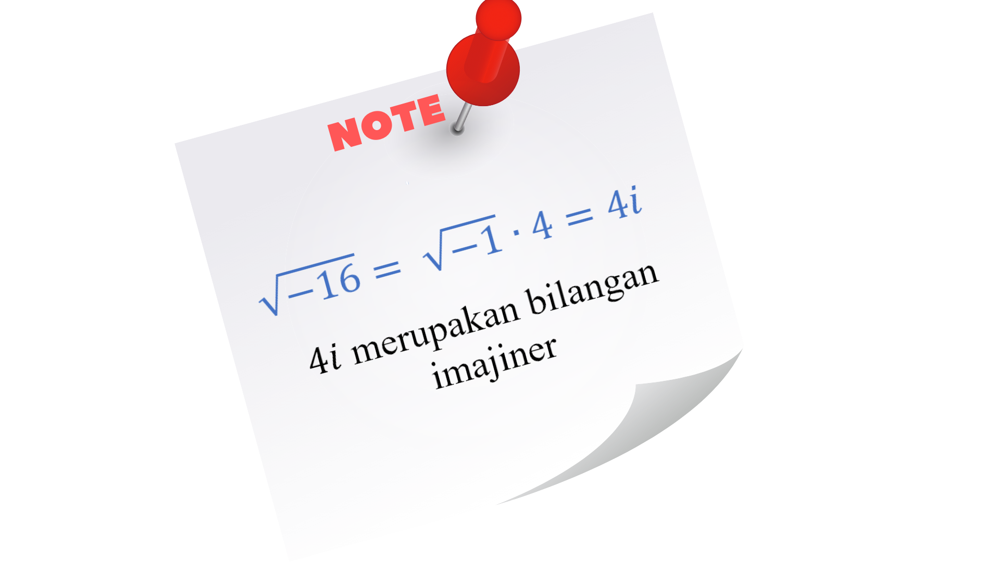

- Siswa mampu menjabarkan sifat - sifat akar persamaan.
- Siswa mampu mengindentifikasikan karakteristik dari penyelesaian persamaan kuadrat dengan melihat nilai diskriminannya.
- Siswa mampu menghitung jumlah dan hasil kali akar.
- Siswa mampu menggali hubungan sifat akar dan koefisen persamaan.
- Siswa dapat menyelesaikan masalah yang berkaitan dengan persamaan kuadrat.
Ada beberapa sifat akar - akar persamaan kuadrat yang perlu kita ketahui. Hal ini akan lebih memudahkan kita dalam menganalisis akar - akar dari suatu persamaan kuadrat. Untuk mengetahuinya, pelajarilah uraian berikut dengan seksama.
Persamaan kuadrat \[ax^{2} + bx + c = 0\], memiliki suatu komponen yang dapat dihitung dan memuat informasi tentang persamaan kuadrat tersebut yang diskriminan. Pada dasarnya, diskriminan merupakan suatu nilai yang menjadi penentu sifat - sifat dari akar - akar suatu persamaan kuadrat. Diskriminan dinotasikan dengan D, dan dirumuskan dengan :
Nilai diskriminan digunakan untuk menghitung akar fungsi kuadrat pada rumus kuadrat atau rumus ABC yaitu :
Sehingga, berdasarkan nilai diskriminannya, sifat dari akar persamaan kuadrat dapat dibedakan menjadi tiga, yaitu :
1. Jika \[D < 0\], maka persamaan kuadrat tersebut tidak memiliki dua akar bilangan kompleks atau lebih dikenal dengan akar - akar tidak nyata karena memuat akar bilangan negatif.
2. Jika \[D = 0\], maka persamaan kuadrat tersebut memiliki akar real yang sama (kembar) \[x_{1} = x_{2}\], dikarenakan
\[x_{1} , x_{2} = \frac{-b \pm \sqrt{b^{2} - 4 a c}}{2a}\] menjadi \[x_{1} \cdot x_{2} = \frac{-b}{2a}\]
3. Jika \[D > 0\], maka persamaan kuadrat mempunyai 2 akar real yang berbeda.

Perhatikan persamaan kuadrat berikut ini.
a. \[x^{2} - 4x - 5 = 0\]
b. \[x^{2} - 2x + 1 = 0\]
c. \[x^{2} - 2x + 5 = 0\]
Tentukan akar - akar dari persamaan kuadrat di atas, untuk bagian :
a. dengan cara faktorisasi.
b. dengan cara melengkapkan kuadrat sempurna.
c. dengan cara rumus kuadratis.

Dari ketiga persamaan kuadrat tersebut manakah persamaan kuadrat yang memiliki akar real dan bukan akar real ?

a. Dengan cara faktorisasi.
\[\Leftrightarrow\] \[x^{2} - 4x - 5 = 0\]
\[\Leftrightarrow\] \[\left ( x + 1 \right )\left ( x- 5 \right ) = 0\]
\[\Leftrightarrow\] \[x = -1\] atau \[x = 5\]
Dari hasil tersebut kita dapatkan dua akar real yang berbeda, agar lebih meyakinkan mari kerjakan dengan rumus diskriminan.
\[\Leftrightarrow\] \[D = b^{2} - 4 a c\]
\[\Leftrightarrow\] \[D = \left ( -4 \right )^{2} - 4\cdot 1\cdot \left ( -5 \right )\]
\[\Leftrightarrow\] \[D = 36\] maka \[D > 0\]
Dari sifat persamaan kuadrat jika \[D > 0\], maka persamaan kuadrat tersebut mempunyai 2 akar real berbeda.
b. Dengan cara melengkapkan kuadrat sempurna.
\[\Leftrightarrow\] \[x^{2} - 2x + 1 = 0\]
\[\Leftrightarrow\] \[ x^{2} - 2x = -1\]
\[\Leftrightarrow\] \[x^{2} - 2x + \left ( \frac{2}{2} \right )^{2} = -1 + \left ( \frac{2}{2} \right )^{2}\]
\[\Leftrightarrow\] \[\left ( x - 2 \right )^{2} = -1 + 1\]
\[\Leftrightarrow\] \[ \left ( x - 2 \right )^{2} = 0\]
\[\Leftrightarrow\] \[\left ( x - 2 \right )\left ( x - 2 \right ) = 0\]
\[\Leftrightarrow\] \[x = 2\] atau \[x = 2\]
Dari hasil tersebut kita dapatkan satu akar real yang sama (kembar), agar lebih meyakinkan mari kita kerjakan dengan rumus diskriminan.
\[\Leftrightarrow\] \[D = x^{2} - 4 a c\]
\[\Leftrightarrow\] \[D = \left ( 4 \right )^{2} - 4\cdot 1\cdot 1\]
\[\Leftrightarrow\] \[D = 0\]
Dari sifat persamaan kuadrat jika \[D = 0\], maka persamaan kuadrat tersebut mempunyai 1 akar real yang sama (kembar).
c. Dengan cara rumus kuadratis atau rumus abc.
Diketahui \[a = 1\], \[b = -2\], \[c = 5\] dari persamaan kuadrat \[x^{2} - 2x + 5 = 0\].
\[\Leftrightarrow\] \[x = \frac{-b \pm \sqrt{b^{2} - 4 a c}}{2a}\]
\[\Leftrightarrow\] \[ x = \frac{-\left ( -2 \right )\pm \sqrt{\left ( -2 \right )^{2}- 4 \cdot 1 \cdot 5}}{2\cdot 1}\]
\[\Leftrightarrow\] \[x = \frac{2 \pm \sqrt{ 4 - 20}}{2}\]
\[\Leftrightarrow\] \[x = \frac{2 \pm \sqrt{-16}}{2}\]
\[\Leftrightarrow\] \[ x = \frac{2 \pm 4\imath}{2}\]
\[\Leftrightarrow\] \[x = 1 + 4\imath\] atau \[x = 1 - 4\imath\]
Dikarenakan hasil yang didapat merupakan bilangan imajiner maka persamaan kuadrat \[x^{2} - 2x + 5 = 0\] tidak memiliki akar real, untuk lebih meyakinkan mari kita cek dengan rumus diskriminan.
\[\Leftrightarrow\] \[D = x^{2} - 4 a c\]
\[\Leftrightarrow\] \[D = \left ( -2 \right )^{2} - 4\cdot 1\cdot 5\]
\[\Leftrightarrow\] \[D = 4 - 20\]
\[\Leftrightarrow\] \[D = -16\] maka \[D < 0\]
Dari sifat persamaan kuadrat jika \[D < 0\], maka persamaan kuadrat tersebut tidak mempunyai akar real.
Jadi, persamaan kuadrat yang memiliki akar real adalah \[x^{2} - 4x - 5 = 0\] dan persamaan kuadrat yang tidak memiliki akar real adalah \[x^{2} - 2x + 5 = 0\]

Tanpa menentukan akar-akarnya, tentukan banyaknya akar real dari persamaan berikut.
a. \[4x^{2} - 20x + 23 = 0\]
b. \[x^{2} - 6x + 9 = 0\]
c. \[7x^{2} + 3x + 7 = 0\]

- Tuliskan jawaban pada kolom kotak yang sudah disediakan.
- Setelah menulis jawaban pada kolom, ketuk bagian layar agar dapat melihat warna kotak.
- Jika kotak berwarna hijau maka jawabanmu benar, jika berwarna merah atau tidak berwarna sekalipun maka jawabanmu salah.
- Kolom jawaban akan berlanjut jika kamu menjawab dengan benar.
Silahkan jawab pertanyaan di atas dengan mengisi kolom di bawah ini:
-
Diketahui persamaan kuadrat : \[4x^{2} - 20x + 23 = 0\]
\[a = \]
\[b = \]
\[c = \]
\[\Leftrightarrow D = b^{2} - 4 a c \]
\[\Leftrightarrow D = (\]\[)^2 - 4 \times \] \[\times \]\[\Leftrightarrow D = \] \[-\]
\[\Leftrightarrow D = \]
Karena \[D < 0 \], maka persamaan kuadrat tersebut :
*Untuk menjawabnya klik salah satu tombol diatas -
Diketahui persamaan kuadrat : \[x^{2} - 6x + 9 = 0\]
\[a = \]\[b = \]
\[c = \]
\[\Leftrightarrow D = b^{2} - 4 a c \]
\[\Leftrightarrow D = (\]\[)^2 - 4 \times \] \[\times \]\[\Leftrightarrow D = \] \[-\]
\[\Leftrightarrow D = \]
Karena \[D = 0 \], maka persamaan kuadrat tersebut :
*Untuk menjawabnya klik salah satu tombol diatas -
Diketahui persamaan kuadrat : \[7x^{2} + 3x + 7 = 0\]
\[a = \]\[b = \]
\[c = \]
\[\Leftrightarrow D = b^{2} - 4 a c \]
\[\Leftrightarrow D = (\]\[)^2 - 4 \times \] \[\times \]\[\Leftrightarrow D = \] \[-\]
\[\Leftrightarrow D = \]
Karena \[D = 0 \], maka persamaan kuadrat tersebut :
*Untuk menjawabnya klik salah satu tombol diatas
1 2 3 4 5